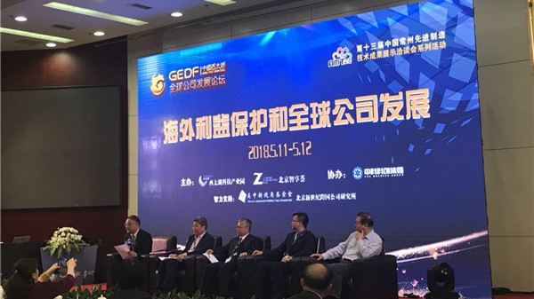
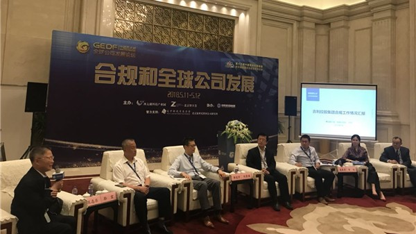
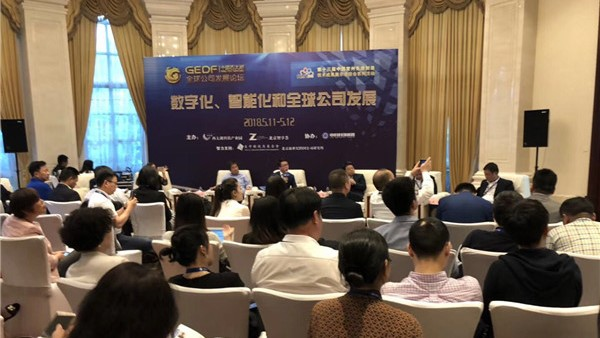
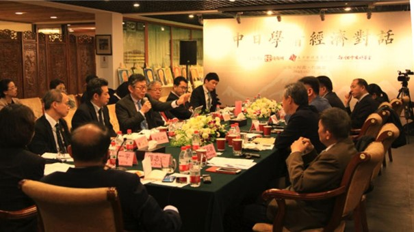

U.S. - China Counterterrorism Conference
Since 2014, the U.S. - China New Perspectives Foundation has held the Sino - U.S. International High-Level Counterterrorism Conference at the Beijing Shanyuan. The conference featured the convening of the U.S. - China New Perspectives Foundation, the Institute for Global Engagement, and the Pu Shi Institute for Social Science. The conference’s major participants were high-ranking, retired generals from China and the United States, as well as counterterrorism experts and scholars.
Counterterrorism is new territory for U.S. - China collaboration. With high expectations for excellency, the U.S. - China New Perspectives Foundation’s Counterterrorism Forum has become an important meeting for U.S. - China counterterrorism efforts.

A Conversation Between Sino-Japanese Scholars: Conference on the Korean Peninsula’s Nuclear Threat
On February 26, 2017, the U.S. - China New Perspectives Foundation and the Sasakawa Japan-China Friendship Fund co-hosted a Sino-Japanese Scholar Conversation Event at the Beijing Shanyuan. The topic of the meeting was the Korean Peninsula’s nuclear threat. The conference welcomed Japanese International Affairs Research Fellows Iimura Yuuki and Yamazaki Shu, Kwansei Gakuin University Professor Hiraiwa Shunji, Kazankai Foundation Research Fellow Yukihiro Hotta, the P.R.C. Ministry of Foreign Affairs’ International Department’s Original Deputy Director General Yu Hongjun, the Central Party School’s International Strategy Research Institute Professors Zhang Liangui, You Fengrong, and other senior Chinese scholars to carry out a thorough analysis of the Korean Peninsula’s nuclear threat.

Conference for Beijing Multinational Corporations
On December 7, 2017, the Beijing CBD Multinational Corporation High-Level Government Business Conference came to a perfect end. This conference was co-organized by the Beijing CBD Multinational Corporation Government Business Club and Z-share Consulting. Leaders from the Department of Trade Foreign Investment Department, the Beijing Commerce Committee Headquarters Economy, and the Beijing CBD Administrative Committee were all in attendance. The founder of the U.S. - China New Perspectives Foundation, Chairman Zhou Zhixing, hosted the conference. Guests conducted a deep dialogue and exchange on the opportunities and advantages of investing in China under the new fully opened circumstances, and achieved excellent results, reaching a consensus on various topics such as how China should attract foreign investment opportunities, China’s all-around new policy’s economic increase, improving investment services, and so on.
The first West Taihu Global Enterprises Development Forum

On May 11-12, 2018, the U.S.-China New Perspectives Foundation co-hosted the first West Taihu Global Enterprises Development Forum, partnered with Changzhou Xitai Lake Technology Industrial Park(in the city of Changzhou, Jiangsu province) and Z-share Consulting. The forum discussed how to assist the opening of Chinese and international economies by promoting and opening up a platform for international dialogue. This forum is the first in a series of talks in the 13th China Changzhou Advanced Manufacturing and Technology Conference.
The Forum featured four sub-forums which discussed the development of global companies in relation to protecting offshore investments, standardizing compliance systems, improving business environments, and adapting to digitization and intelligence systems.
In addition to sharing ideas and experiences, the Forum was also the culmination of intercultural exchange. From the unique flower arrangement—a joint project using wood and flowers from Changzhou and inspiration from Chelsea, England—to the mix of ancient chimes and Changxi Opera with modern audio effects, to the innovative Changzhou cuisine, the venue itself represented the fruits of international cooperation and exchange.

Over 300 government officials, academics, and business executives attended the conference, including leaders from ministries, analysts from think-tanks, and executives from both domestic and foreign multinational corporations. Among the guests were Han Yong, Deputy Director of the Department of International Investment Cooperation of the Ministry of Commerce; Zhang Gang, chief engineer of the General Administration of Quality Supervision, Inspection and Quarantine (AQSIQ); Cai Ruide, Chairman of the American Chamber of Commerce in China; Li Peigen, former President of Huazhong University of Science and Technology; Cao Side, Vice President of Cummins Group, and many more prominent individuals.
The Forum attracted extensive reporting from well-known media outlets such as Sina.com, People.com, Global.com, Fortune.com, First Financial, Economic Observer, Interface News, etc.

The West Taihu Global Enterprises Development Forum will be held once a year at West Taihu. The Forum will use pragmatism, openness, and a realistic attitude to discuss real problems faced by developing companies all over the world, as well as the future of global companies and the Chinese economy.
The China-Japan Scholars’ Dialogue on Sino-Japanese Economic Issues Forum
The China-Japan Scholars’ Dialogue on Sino-Japanese Economic Issues Forum, hosted by the U.S.-China New Perspectives Foundation, held on March 27, 2018 in Beijing.
Zhixing Zhou, chairman of the U.S.-China New Perspectives Foundation, hosted the forum, which was divided into four sub-forums. Speakers included representatives from both Chinese and Japanese enterprises, universities, and government organizations.

During the first presentation, “The Current Situation and Future of Sino-Japanese Economic Integration,” speakers focused on the market industries ripe for Sino-Japanese cooperation. Dounoue Takeo, Director of the Japan External Trade Organization's (JETRO) Beijing Office, discussed China and Japan's shared problem of an aging population and therefore, the market potential of consumer products and service industries aimed toward the elderly.

The second presentation, "Sino-Japanese Economic and Trade Cooperation under the ‘One Belt, One Road’ Initiative," focused on the effects of China's economic plan on Sino-Japanese relations. Speakers examined the influence of anti-Chinese prejudice on global reception of the initiative as well as the difference between the challenges Chinese and Japanese companies face when expanding overseas.
For the third presentation, "What Chinese Enterprises Going Abroad Can Learn from the Experiences of Japanese Enterprises," Masashi Iwanaga, General Manager for the Beijing Office of the Japan-China Economic Association, discussed the initial challenges of Japanese companies going abroad during the 1960's and 70's, and the importance of integration with the local community and concern for local people.
During the final presentation, "What China Can Learn from Japan's Economic Transition,” Yulai Zhang, Director of the Japan Institute of Nankai University, began by analyzing Japan's manufacturing industry and how China can learn from Japan's handling of its manufacturing scandals over the 2017 year. Lastly, Tsugami Toshiya, President of Tsugami Toshiya’s Works, introduced Japan’s historical industrial policy and highlighted the positive industrial adjustment policy, comparing the current US-China Trade War to the US-Japan Trade War from before the formation of the WTO.
The forum was jointly sponsored by the Sasakawa Peace Foundation, Embassy of Japan in China, and Dunjiaodu.com. The forum took place in anticipation of the "West Taihu Global Enterprises Development Forum" which will be held May 11-12 with even more multinational companies representing other countries present.
Mr. Deng Goes to Washington
From November 10 – 22, 2016, the U.S. - China New Perspectives Foundation planned and organized a retrospective on the film Mr. Deng Goes to Washington, a documentary on Deng Xiaoping’s 1979 trip to the United States. The founder of the U.S. - China New Perspectives Foundation, Zhou Zhixing, and the director of the film, Fu Hongxing, served as representatives and speakers as they traveled to the six cities of Atlanta, Boston, New York, Washington D.C., Los Angeles, and San Diego, holding seven screenings and discussions. U.S. Ambassador Julia Chang Bloch, former National Security Advisor to the Carter Administration Zbigniew Brzeziński, who had been present at Deng Xiaoping’s trip to the U.S., as well as Ambassador to the People’s Republic of China to the United States Cui Tiankai and other guests of similar weight were invited to attend this discussion.
On November 16, Mr. Deng Goes to Washington was screened at the Meridian International Center in Washington, D.C. Ambassador to the People’s Republic of China to the United States Cui Tiankai and former National Security Advisor to the Carter Administration Zbigniew Brzeziński were invited to attend the event and deliver an address. U.S. Congressman Rick Larsen, Chairman of the U.S. - China Education Trust Julia Chang Bloch, Chairman of the Meridian International Center Stuart Holliday, and a diverse audience of nearly a hundred people in total attended this screening event.

Mayor’s Delegation
From March 11 – 17, 2017, the U.S. - China New Perspectives Foundation and the Tai Initiative jointly held a U.S. Mayor’s Delegation to China event. The delegation was from Westland, Michigan and Gahanna, Ohio, and was composed of people from professional organizations. They visited the three cities of Shanghai, Changzhou, and Shenzhen. The event had an enormous impact on promoting communication and understanding between U.S. – China city-level officials, and allowed both sides to consider the potentials for economic partnership opportunities.

The Tai Initiative is a nonprofit organization that strives to promote U.S. - China communication in Seattle. Their main work is to promote U.S. - China communication on multiple levels.
The Carter Center Call for Papers Event
On January 30, 2018, the Carter Center, The Global Times, and Emory University’s Office of Global Strategy and Initiatives jointly held the Fourth U.S. - China Young Scholars Conference in Atlanta, Georgia. The U.S. - China Young Scholars Conference was established in 2014 as a collaborative effort between the Carter Center and The Global Times, and serves as a platform for allowing young Chinese and American scholars to connect, engage in discussion, and conduct research.
At the conference, more than ten scholars from China and America shared their research projects. Zhu Feng, from Nanjing University’s International Relations Department, the Director of the Wilson Center’s Kissinger Institute on China and the United States Robert Daly, the Director of the University of Texas at Austin’s China Policy Center David J. Firestein, and other top experts on U.S. - China relations evaluated and gave feedback on the young scholars’ research.
The Director of the U.S. - China New Perspectives Foundation, Zhou Zhixing, and Editor-in-Chief of The Global Times Hu Tin delivered a special address analyzing various issues in both left wing and right wing approaches to U.S. - China relations.
The U.S. - China New Perspectives Foundation was a collaborator in this conference and published a collection of scholarly papers titled The Impact of Nationalism and National Identity on Sino-American Relations.